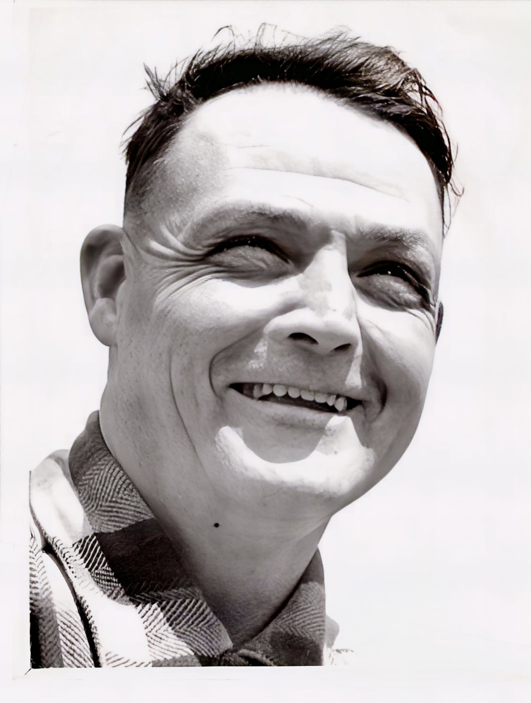

The City-bred Farmer chronicles the real life experience of the author, Clarence Dirks, as he navigated moving from the city to start a farm with his family. These articles were collected by his son, "baby Michael", so they could be enjoyed all together.
Happy reading!

CLARENCE DIRKS, The Seattle Post Intelligencer’s City Bred Farmer on Puget Sound whose Diary ran in the PI from 1946 to 1958. The column began as a weekly feature and within two years was appearing five times a week. On over 20 occasions it was run on the front page.